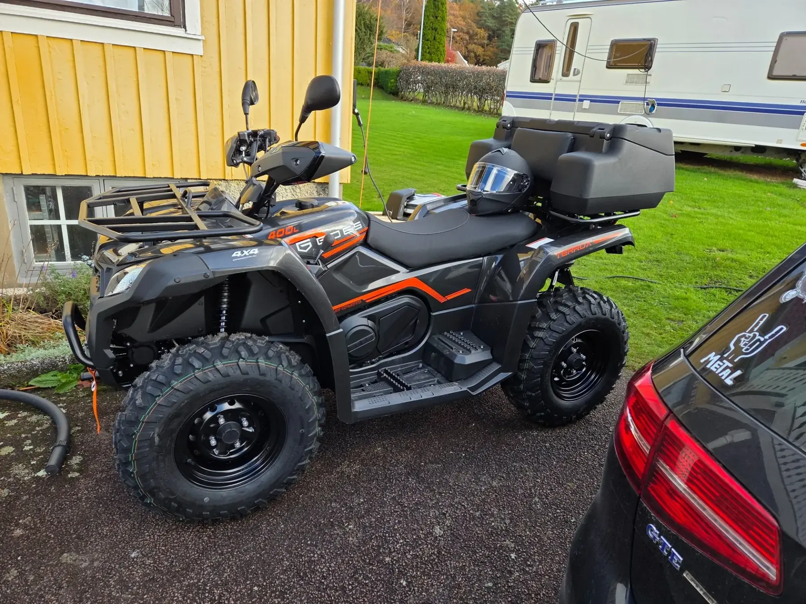
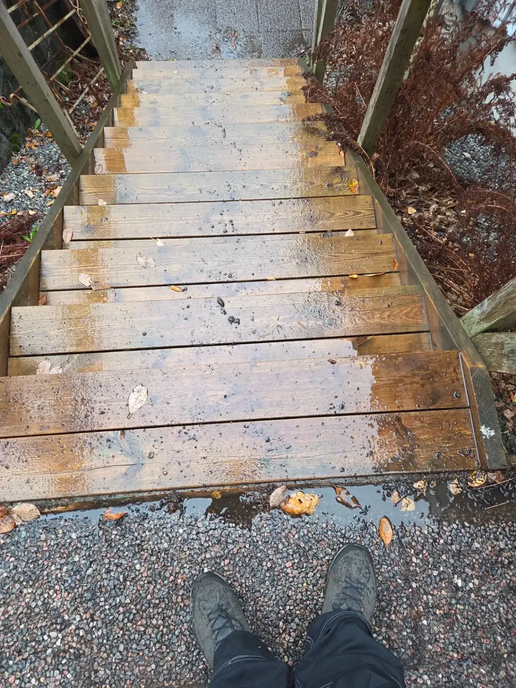
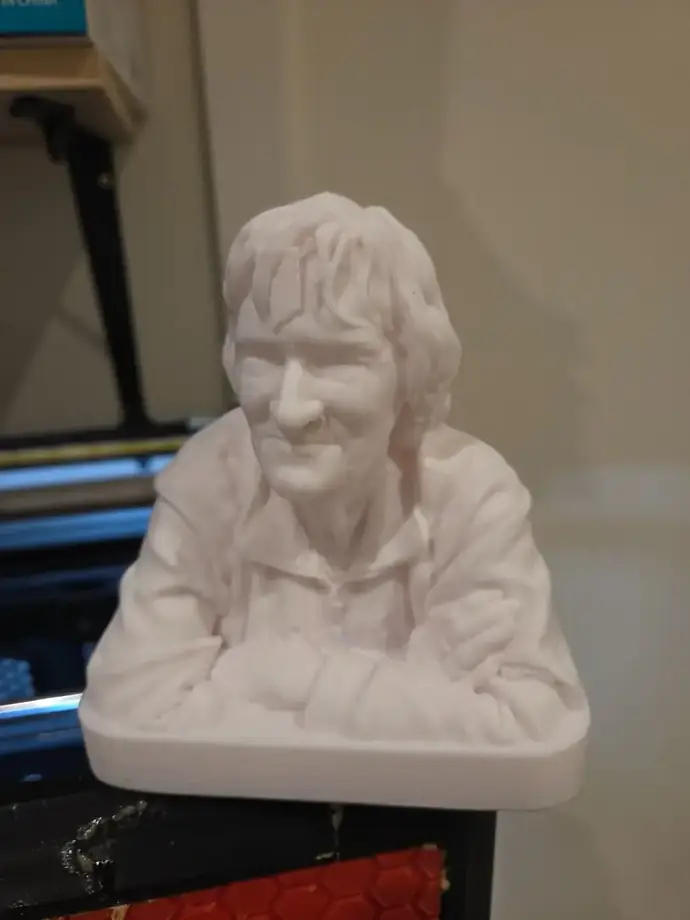
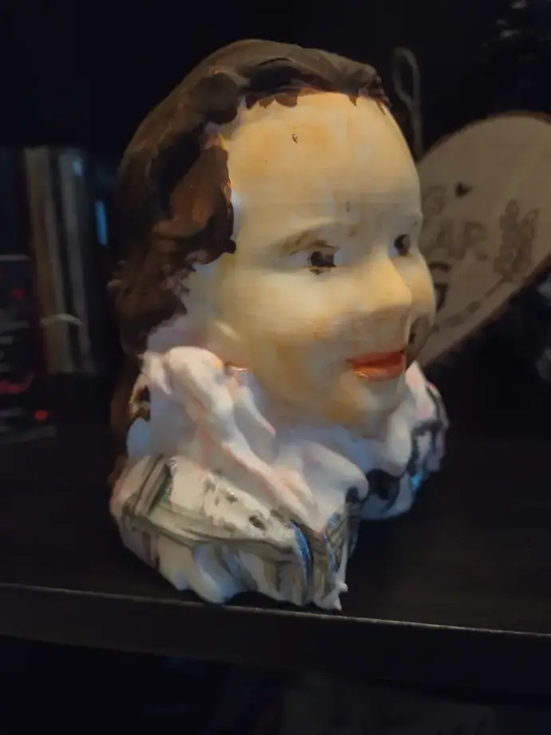
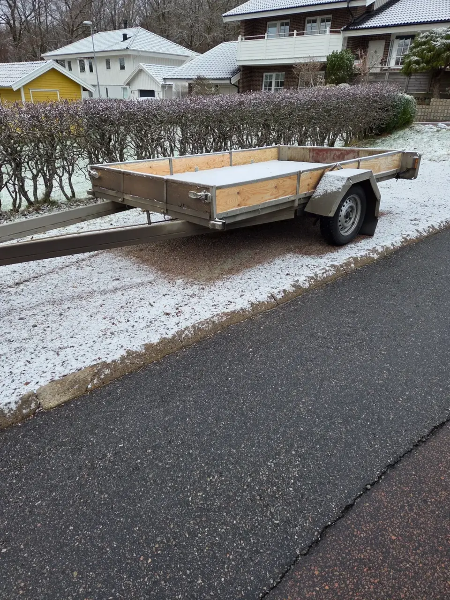

Hemma & på jobbet
Rent, ljust och ordning i vardagen.

Lund Fixar · Kungälv med omnejd
Städning, trädgård och praktisk hjälp för privatpersoner och företag.
Hemmet, trädgården, garaget eller förrådet. Vi hjälper dig med det som behöver bli gjort, så att du kan lägga tiden på annat.
Rent, ljust och ordning i vardagen.
Ta hand om platsen runt omkring.

Rensa, sortera och få undan.
Tvätt av sten. Före och efter, ur vårt fotogalleri.
3D-utskrifter
Reservdelar, verktyg eller en personlig byst utifrån ett fotografi. Berätta vad du vill skapa.
Upptäck 3D-utskrifter


ATV, släp, lövuppsamlare, snöplog och sand- och saltspridare. Här kan du se utrustningen bakom en del av våra uppdrag.
Se vår utrustningStädning, fönsterputs, utemiljö och röjning för kontor, butiker och andra verksamheter. Enstaka uppdrag eller återkommande hjälp.
Lund Fixar för företagVi finns i Romelanda och hjälper kunder i Kungälv med omnejd. Berätta var du behöver hjälp.